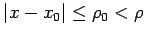
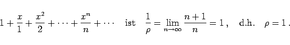
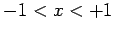
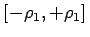
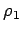

Inhalt Index DeskTop Bronstein

 Unendliche Reihen Funktionenreihen Potenzreihen Definition der Potenzreihe, Konvergenz
Unendliche Reihen Funktionenreihen Potenzreihen Definition der Potenzreihe, Konvergenz


Gleichmäßig konvergent ist eine Potenzreihe in jedem abgeschlossenen Teilgebiet  des Konvergenzbereiches (Satz von ABEL).
| Beispiel |
|
Für die Reihe |
|  | (7.78) |
Somit konvergiert die Reihe absolut in , für x = -1 ist sie bedingt konvergent (s. (7.34)) und für x = 1 divergiert sie (s. harmonische Reihe (7.16)). Gemäß dem Satz von ABEL handelt es sich um eine gleichmäßig konvergente Reihe in jedem Intervall , wobei  eine beliebige Zahl zwischen 0 und 1 ist.